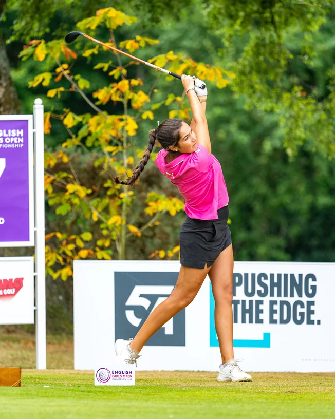

Parcerias
Levar Portugal mais longe
Aos dezassete anos tem quatro títulos nacionais e joga o calendário europeu. As provas que dão pontos para o ranking mundial jogam-se em Espanha, França, Inglaterra e Irlanda, e cada uma é uma viagem, uma inscrição e uma semana fora. É aí que entra quem apoia — no saco, na roupa de jogo e nas fotografias de prova.

Quem já apoia
Boa companhia
Quem já acompanha o percurso, agrupado pela natureza da relação.
Liderou do princípio ao fim rumo à vitória em sub-18 femininos.
Formas de entrar
Três maneiras
Não há tabela de preços fechada nesta página, de propósito: cada parceria desenha-se com quem entra. Diga o que tem em mente e recebe uma proposta concreta — com provas, datas e o que fica visível.
Falar sobre istoNo Instagram
Como isto se vê
O trabalho com as marcas, tal como sai no Instagram dela. É o argumento mais concreto para quem está a pensar entrar: não é uma promessa de visibilidade, é visibilidade já feita.
Contacto
Falar com a equipa
Parcerias, imprensa, convites e pedidos de fotografias. Quanto mais concreto for o pedido, mais concreta é a resposta.
Ligações oficiais
Este formulário ainda não está ligado a um serviço de entrega. Enquanto isso, a via mais rápida é a mensagem direta no Instagram.